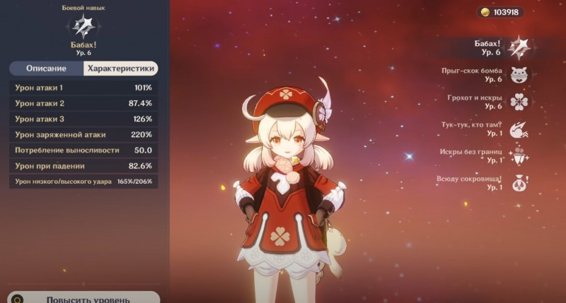
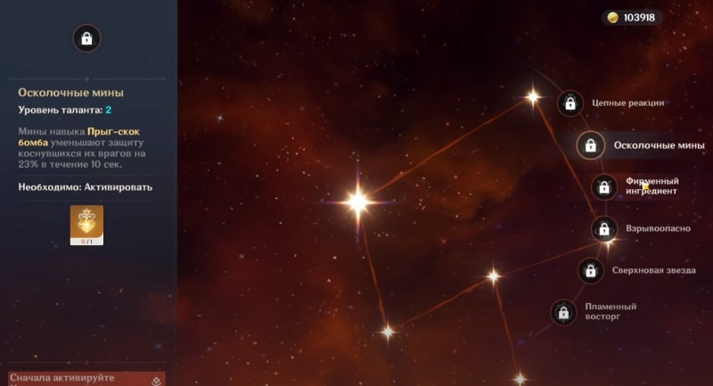

В Genshin Impact Кли является 5-звездочным персонажем, который может случайно выпасть игрокам при трате накопленных камней истока. Если вам уже выпала данная героиня или вы хотите узнать, стоит ли вообще пытаться выбить ее, то прочитайте наше руководство, в котором мы указали ее основные особенности, а также рассказали о лучших билдах, оружии и артефактах для нее.
Так как она является заклинателем, ее атаки немного менее предсказуемы, чем у классических персонажей. Для примера: ее обычная атака – это бросок бомбы, а заряженная – лазерный луч с взрывом.
Что касается контроля поле боя, Кли, безусловно, справляется с этим на все 100. «Прыг-скок бомба», ее базовая способность, призывает медведя, который дважды подпрыгивает, прежде чем превратиться в минное поле, взрывающееся при контакте с противником. И у нее имеется сразу два заряда! Ее ульта «Грохот и искры» создает в воздухе бомбочки, которые наносят огромный Пиро урон по площади.
После того как вы разблокируете оба ее пассивных умения, ее заряженные атаки станут намного мощнее, и появится шанс, что они не будут тратить выносливость, станут наносить на 50 процентов больше урона и дадут всем членам группы энергию стихий после осуществления критического удара. Ее пассивные навыки выглядят следующим образом:
Тук-тук, кто там? – возвышение 1: нанеся повреждения «Прыг-скок бомбой», персонаж получает 50-процентный шанс создать взрывную искру, расходуемую во время следующего заряженного удара (не стоит выносливости и наносит на 50 процентов больше урона).
Искры без границ – возвышение 4: после критического попадания с использованием заряженного удара каждый участник команды получает 2 единицы элементальной энергии.
Всюду сокровища! – отображает расположение близлежащих ресурсов, уникальных для Мондштадта (диковины), на мини-карте.
Начальные перки Кли прекрасны и являются хорошим дополнением к базовым атакам и умениям, однако именно таланты «Взрывоопасно» и «Пламенный восторг» открывают истинную силу данного персонажа. К сожалению, разблокировать их крайне трудно, так как получение талантов зависит лишь от везения игрока.
